Networks and Trees
Readings: 1 (Chapter 9), 2 (optional)
Graph Visualization Tasks
What are typical queries for graph data?
Graphs are common across a wide range of fields — for example, biochemistry (metabolic networks), sociology (friendship networks), digital humanities (letter-writing networks), evolution (phylogenetic trees), transportation (logistical routing), gastronomy (recipe networks) and cybersecurity (inter-computer communication). In each of these fields, it’s common to visualize the network. How can network visualization be useful across so many areas? We’ll develop task abstractions that helps us recognize commonalities across network analysis. We’ll also develop criteria that can be used to evaluate the quality of the resulting visualizations.
Networks and trees are types of graphs, which are defined by (a) a set \(V\) of vertices and (b) a set \(E\) of edges between pairs of vertices. Some examples to keep in mind,
- The Internet: \(V = \{\text{All Webpages}\}, \left(v, v^{\prime}\right) \in E\) if there is a hyperlink between pages \(v\) and \(v^{\prime}\).
- Evolutionary Tree: \(V = \{\text{All past and present species}\}, \left(v, v^{\prime}\right) \in E\) if one of the species \(v\) or \(v^{\prime}\) is a descendant of the other.
- Disease Transmission: \(V = \{\text{Community Members}\}, \left(v, v^{\prime}\right) \in E\) if the two community members have come in close contact.
- Directory Tree: \(V = \{\text{All directories in a computer}\}, \left(v, v^{\prime}\right) \in E\) if one directory is contained in the other.
Figure 1: A visualization of the internet from the Opte Project. 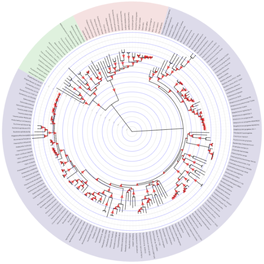
Figure 2: An evolutionary tree from the Interactive Tree of Life. 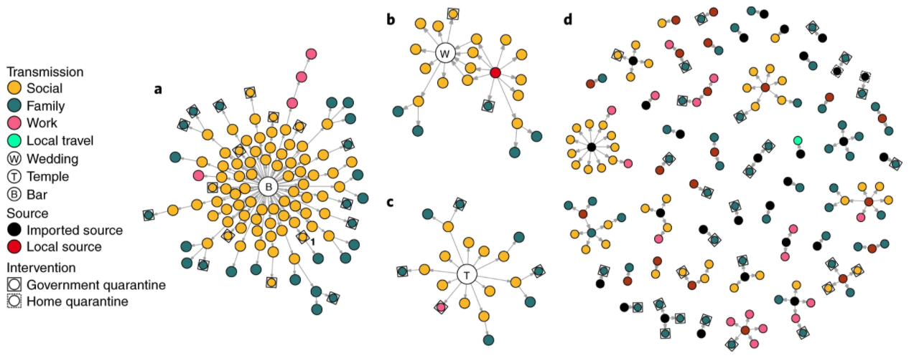
Figure 3: A COVID-19 transmission network, from Clustering and superspreading potential of SARS-CoV-2 infections in Hong Kong. 
Figure 4: Directories in a file system can be organized into a tree, with parent and child directories. Either vertices or edges might have attributes. For example, in the directory tree, we might know the sizes of the files (vertex attribute), and in the disease transmission network we might know the duration of contact between individuals (edge attribute).
An edge may be either undirected or directed. In a directed edge, one vertex leads to the other, while in an undirected edge, there is no sense of ordering.
Trees are a special type of graph which have no cycles (paths starting at one node that can return without retracing any steps). Informally, they can be thought of as hierarchies descending from a “root” node. That extra structure means the layout does not have to be discovered by an iterative algorithm — we can simply encode each node’s depth in the tree using vertical or radial position.
For example, the data below shows the directory structure of an open source software package called
flare.G_flare <- tbl_graph(flare$vertices, flare$edges) G_flare# A tbl_graph: 252 nodes and 251 edges # # A rooted tree # # Node Data: 252 × 3 (active) name size shortName <chr> <dbl> <chr> 1 flare.analytics.cluster.AgglomerativeCluster 3938 AgglomerativeCluster 2 flare.analytics.cluster.CommunityStructure 3812 CommunityStructure 3 flare.analytics.cluster.HierarchicalCluster 6714 HierarchicalCluster 4 flare.analytics.cluster.MergeEdge 743 MergeEdge 5 flare.analytics.graph.BetweennessCentrality 3534 BetweennessCentrality 6 flare.analytics.graph.LinkDistance 5731 LinkDistance 7 flare.analytics.graph.MaxFlowMinCut 7840 MaxFlowMinCut 8 flare.analytics.graph.ShortestPaths 5914 ShortestPaths 9 flare.analytics.graph.SpanningTree 3416 SpanningTree 10 flare.analytics.optimization.AspectRatioBanker 7074 AspectRatioBanker # ℹ 242 more rows # # Edge Data: 251 × 2 from to <int> <int> 1 221 1 2 221 2 3 221 3 # ℹ 248 more rowsA word of warning. While network analyses are extremely popular, they are limits to be aware of.
It may force a reduction of the data that limits what we will notice. For example, if we’re studying how genes in a cell regulate one another’s expression, we may originally measure detailed activity levels over time or across samples. Converting these measurements to whether pairs of genes are “connected” versus “not connected” is a dramatic simplification (Wang et al. 2021).
It can inadvertently drive polarization. By making network “neighborhoods” seem natural, we might build systems that further reinforce difference (Chun and Barnett 2024).
Exercise: Consider one dataset that could be represented as a network (you can pick your own or one from 1. above). What are the vertices, and what are the edges? Do they have attributes? Are the edges directed or undirected?
Tasks
What visual comparisons do networks and trees facilitate? Viewed narrowly, there are two basic types of queries for graph data. Topological queries ask how nodes are linked with one another — for example, is node A within three steps of node B? Attributional queries instead concern the attributes associated with nodes and edges — for example, which nodes (or edges) have an attribute value above X?
More broadly, we often visualize graphs with the goal of developing a more global view beyond isolated nodes. Our initial examples suggest that trees and networks can represent either physical interactions or conceptual relationships, and across both, three tasks recur,
- Searching for groupings
- Following paths
- Isolating key nodes
By “searching for groupings,” we mean finding clusters of nodes that are highly interconnected, but which have few links outside the cluster. This kind of modular structure might lend itself to deeper investigation within each of the clusters.
- Clusters in a network of political blogs might suggest an echo chamber effect.
- Gene clusters in a differential expression study might suggest pathways needed for the production of an important protein.
- Clusters in a recipe network could be used identify different culinary techniques or cuisines.
By “following paths,” we mean tracing the paths out from a particular node, to see which other nodes it is close to. This is where connections between nodes or clusters of interest become visible.
- Following paths in a citation network might reveal the chain of publications that led to an important discovery.
- Following paths in a recommendation network might suggest other users who might be interested in watching a certain movie.

Figure 5: A recommendation network linking individuals and the movies that they viewed. “Isolating key nodes” is a more fuzzy concept, usually referring to the task of finding nodes that are exceptional in some way. Two recurring notions of “exceptional” are hubs, which have many more neighbors than other nodes, and central nodes, which lie on the shortest paths between many pairs of nodes.
- A node with many edges in a disease transmission network is a superspreader.
- A node that links two clusters in a citation network might be especially interdisciplinary.
- A node with large size in a directory tree might be a good target for reducing disk usage.

Figure 6: The scientific journal Social Networks links several publication communities, as found by Betweenness Centrality as an Indicator of the Interdisciplinarity of Scientific Journals. Exercise: For the network that you described in the previous exercise, are the most important questions related to search for groupings, following paths, or isolating key nodes? Explain your reasoning.
Representing Graphs in R
One of the best R packages for graph manipulation is called
tidygraph. The goal of this package is to extend the semantics of the tidyverse to graph-structured data. We can’t simply use the standarddplyrfunctions because graphs cannot be stored in a single data.frame. They are instead represented by a pair of data.frames, one for the nodes and one for the edges, and thetidygraphstructure represents graphs in exactly this way.For example,
Gbelow shows the friendship connections between 70 students in a high school over two years, derived from a survey conducted in 1957 and 1958. TheNode Datacomponent gives features for each student (in this case, just the name), whileEdge Datarepresents friendship links between students.G <- as_tbl_graph(highschool) G# A tbl_graph: 70 nodes and 506 edges # # A directed multigraph with 1 component # # Node Data: 70 × 0 (active) # # Edge Data: 506 × 3 from to year <int> <int> <dbl> 1 1 13 1957 2 1 14 1957 3 1 20 1957 # ℹ 503 more rowsThe beauty of this data structure is that we can define the analogs of the usual tidyverse verbs for it. For example, we can derive a new node attribute using
mutate.G |> mutate(favorite_color = sample(c("red", "blue"), n(), replace = TRUE))# A tbl_graph: 70 nodes and 506 edges # # A directed multigraph with 1 component # # Node Data: 70 × 1 (active) favorite_color <chr> 1 red 2 red 3 red 4 blue 5 red 6 red 7 red 8 blue 9 blue 10 blue # ℹ 60 more rows # # Edge Data: 506 × 3 from to year <int> <int> <dbl> 1 1 13 1957 2 1 14 1957 3 1 20 1957 # ℹ 503 more rowsWhat if we want to mutate the edges instead? We have to tell tidygraph to “activate” the edge set,
G |> activate(edges) |> mutate(weight = runif(n()))# A tbl_graph: 70 nodes and 506 edges # # A directed multigraph with 1 component # # Edge Data: 506 × 4 (active) from to year weight <int> <int> <dbl> <dbl> 1 1 13 1957 0.878 2 1 14 1957 0.379 3 1 20 1957 0.724 4 1 52 1957 0.858 5 1 53 1957 0.186 6 2 20 1957 0.633 7 2 21 1957 0.718 8 3 9 1957 0.542 9 3 14 1957 0.205 10 4 5 1957 0.900 # ℹ 496 more rows # # Node Data: 70 × 0To avoid these activate calls, a convenient shorthand is calling mutate with
%N>%and%E>%for modifying node and edge data, respectively,G %E>% mutate(weight = runif(n()))# A tbl_graph: 70 nodes and 506 edges # # A directed multigraph with 1 component # # Edge Data: 506 × 4 (active) from to year weight <int> <int> <dbl> <dbl> 1 1 13 1957 0.900 2 1 14 1957 0.494 3 1 20 1957 0.416 4 1 52 1957 0.621 5 1 53 1957 0.882 6 2 20 1957 0.661 7 2 21 1957 0.258 8 3 9 1957 0.165 9 3 14 1957 0.901 10 4 5 1957 0.0469 # ℹ 496 more rows # # Node Data: 70 × 0There are many other verbs that have been defined for tidygraph objects. For example, we can join two graphs together.
## initialize two simple graphs G1 <- create_ring(10) %N>% mutate(id = LETTERS[1:n()]) G2 <- create_bipartite(4, 2) |> mutate(id = LETTERS[1:n()]) ## join them together G1 |> graph_join(G2)# A tbl_graph: 10 nodes and 18 edges # # A directed acyclic multigraph with 1 component # # Node Data: 10 × 2 (active) id type <chr> <lgl> 1 A FALSE 2 B FALSE 3 C FALSE 4 D FALSE 5 E TRUE 6 F TRUE 7 G NA 8 H NA 9 I NA 10 J NA # # Edge Data: 18 × 2 from to <int> <int> 1 1 2 2 2 3 3 3 4 # ℹ 15 more rows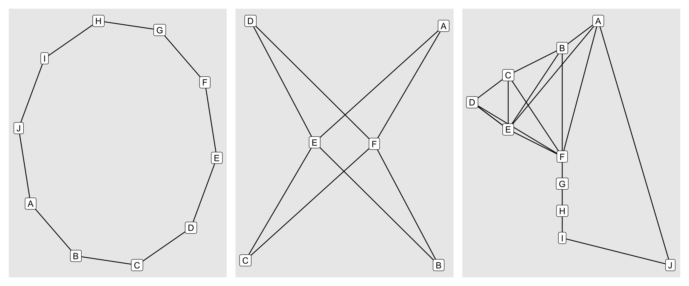
Figure 7: A ring graph, a bipartite graph, and the result of joining them. Similarly, we can filter nodes or edges based on their attributes.
G %E>% mutate(weight = runif(n())) |> filter(weight < 0.2) |> arrange(-weight)# A tbl_graph: 70 nodes and 92 edges # # A directed multigraph with 12 components # # Edge Data: 92 × 4 (active) from to year weight <int> <int> <dbl> <dbl> 1 63 65 1958 0.195 2 65 58 1958 0.194 3 11 19 1957 0.194 4 60 63 1957 0.192 5 63 68 1958 0.192 6 52 53 1958 0.190 7 6 19 1958 0.190 8 57 66 1958 0.188 9 16 21 1958 0.186 10 47 52 1957 0.181 # ℹ 82 more rows # # Node Data: 70 × 0It’s possible to perform simple graph algorithms using these verbs. For example, we can cluster nodes based on their connection structure. This is our first “searching for groupings” task, solved computationally rather than visually.
G |> to_undirected() |> mutate(cluster = group_louvain())# A tbl_graph: 70 nodes and 506 edges # # An undirected multigraph with 1 component # # Node Data: 70 × 1 (active) cluster <int> 1 1 2 1 3 1 4 2 5 2 6 1 7 1 8 1 9 1 10 2 # ℹ 60 more rows # # Edge Data: 506 × 3 from to year <int> <int> <dbl> 1 1 13 1957 2 1 14 1957 3 1 20 1957 # ℹ 503 more rows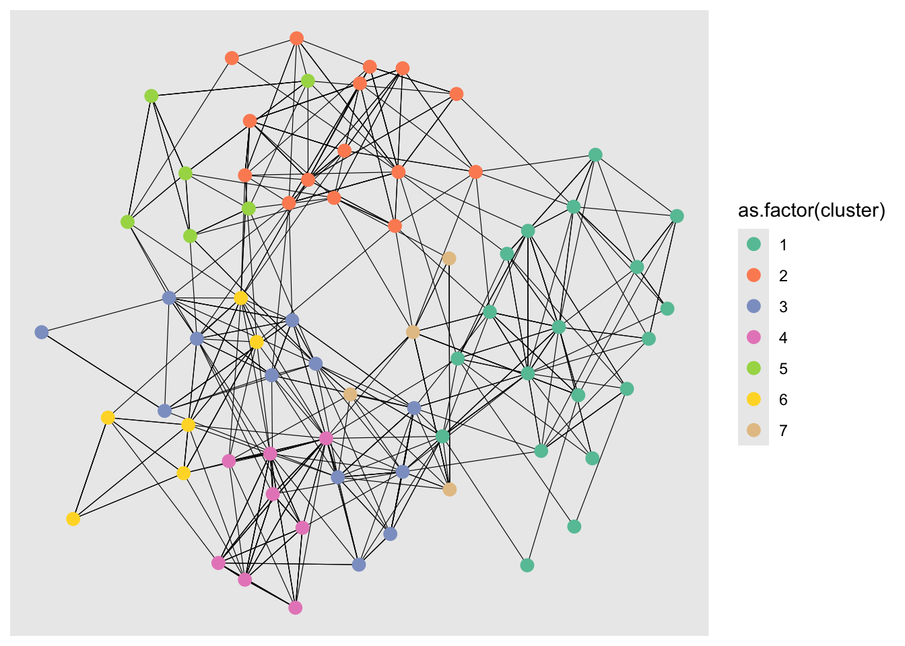
Figure 8: Louvain clusters in the high school friendship network. We can even map over nodes to compute topological queries. For example, the block below computes the number of neighbors within two steps of each node, using the
local_sizefunction. More general operations can be computed using map operations, likemap_localormap_bfs.G |> mutate(two_steps = local_size(order = 2))# A tbl_graph: 70 nodes and 506 edges # # A directed multigraph with 1 component # # Node Data: 70 × 1 (active) two_steps <dbl> 1 32 2 21 3 12 4 24 5 31 6 25 7 20 8 16 9 47 10 33 # ℹ 60 more rows # # Edge Data: 506 × 3 from to year <int> <int> <dbl> 1 1 13 1957 2 1 14 1957 3 1 20 1957 # ℹ 503 more rowsThe high-school friendship network
Gis built into thetidyversepackage. In practice, what we will often have to do is find (or create) two CSV files representing the edges and the nodes. We can read these in using CSV and then convert them to atbl_graphobject. For example, the two datasets below are a small extract from Amazon’s political book recommendation system. Given any book, all the recommended books displayed under it are considered its neighbors. Thecccandccisay whether to treat columns as character or integer. This is important for us because we don’t want to treat book IDs as numeric data.nodes <- read_csv("https://go.wisc.edu/563cy6", col_types = "ccc") edges <- read_csv("https://go.wisc.edu/but14m", col_types = "cci") head(nodes)# A tibble: 6 × 3 id label political_ideology <chr> <chr> <chr> 1 0 1000 Years for Revenge neutral 2 1 Bush vs. the Beltway conservative 3 2 Charlie Wilson's War conservative 4 3 Losing Bin Laden conservative 5 4 Sleeping With the Devil neutral 6 5 The Man Who Warned America conservativehead(edges)# A tibble: 6 × 3 source target weight <chr> <chr> <int> 1 1 0 1 2 2 0 1 3 3 0 1 4 3 1 1 5 4 0 1 6 4 2 1We can now unify them into a single graph. We’ve set
directedtoFALSEsince the order of recommendations is less important in this application.G_books <- tbl_graph(nodes, edges, node_key = "id", directed = FALSE) G_books# A tbl_graph: 105 nodes and 441 edges # # An undirected simple graph with 1 component # # Node Data: 105 × 3 (active) id label political_ideology <chr> <chr> <chr> 1 0 1000 Years for Revenge neutral 2 1 Bush vs. the Beltway conservative 3 2 Charlie Wilson's War conservative 4 3 Losing Bin Laden conservative 5 4 Sleeping With the Devil neutral 6 5 The Man Who Warned America conservative 7 6 Why America Slept neutral 8 7 Ghost Wars neutral 9 8 A National Party No More conservative 10 9 Bush Country conservative # ℹ 95 more rows # # Edge Data: 441 × 3 from to weight <int> <int> <int> 1 1 2 1 2 1 3 1 3 1 4 1 # ℹ 438 more rowsExercise: How might any of the operations for manipulating
tbl_graphobjects come up in a visualization task? Give one concrete example.
Visual Representations
Now that we have a sense of what graph data are, we’ll consider alternatives to visualizing them. What distinguishes a good from a bad graph visualization? As in all data visualization, effectiveness is closely tied to function. The representation should make sure information needed to support the intended task is easily accessible, and that superfluous information does not occupy too much of the reader’s attention.
For example, if a visualization has many edge crossings, then we will have trouble answering topological queries, since crossings make it impossible to follow edges. Similarly, in small multiples or interactive versions of graph visualizations, we should aim to minimize the amount of change in the positions of the nodes and edges across panels or after user interactions. It is hard to make sense of an evolving graph if the same nodes and edges are unnecessarily jumping around.
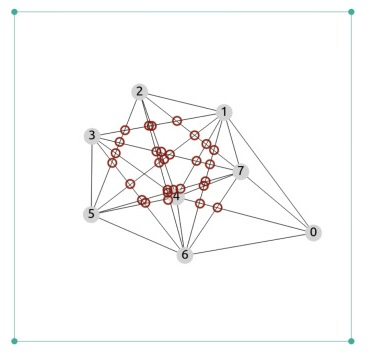
Figure 9: Edge crossings can make topological queries challenging. Figure from (Ehlers et al. 2023). The options reviewed below have different strengths and weaknesses relative specific tasks (grouping, path following, key nodes). Some comparisons are simply illegible, or require much higher cognitive load, in one representation vs. another. Keep these tradeoffs in mind when deciding on how to visually represent network or tree data.
Node-Link Diagrams
A node-link diagram is a visualization strategy for network data where nodes are drawn as points and links between nodes are drawn as lines between them. The
ggraphpackage gives a ggplot2-like design interface for graph-structured (rather than tabular) data. Like ggplot2, visualizations are built by composing layers for separate visual marks, and scale and labeling functions are available to customize the appearance of those marks. Note thatggraphexpects atbl_graphas input, not simply adata.frame.G_school <- G %E>% mutate(year = factor(year)) ggraph(G_school) + geom_edge_link(aes(col = year), width = 0.1) + geom_node_point()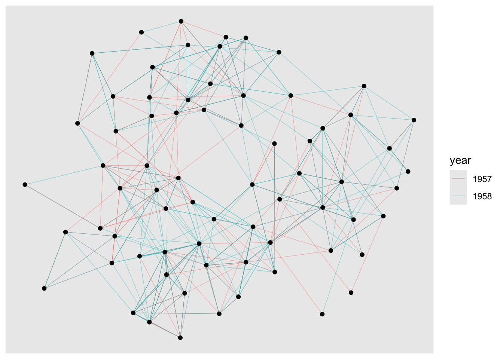
Figure 10: A node-link diagram of the high school friendship network. Attributes of nodes and edges can be encoded using size (node radius or edge width) or color, exactly as in ggplot2. Above, edge color encoded the survey year, while below both node size and node color encode degree.
G_school %N>% mutate(log_degree = log(local_size(), 10)) |> ggraph() + geom_edge_link(width = 0.2) + geom_node_point(aes(col = log_degree, size = log_degree))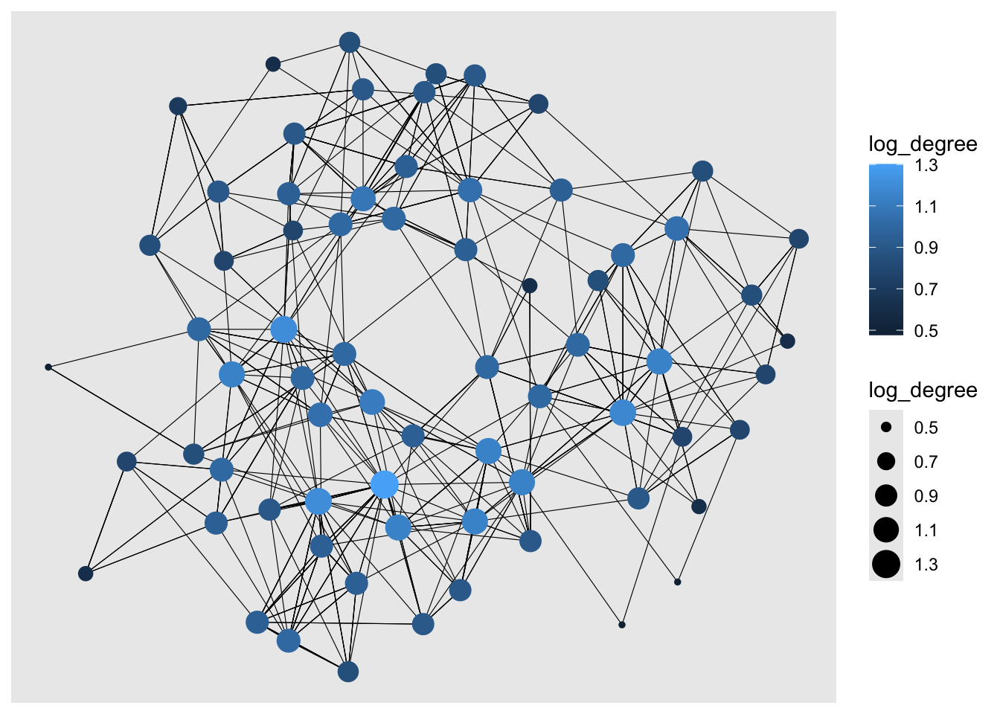
Figure 11: Encoding node degree using both size and color. The node-link representation is especially effective for the task of following paths. It’s an intuitive visualization for examining the local neighborhood of one node or describing the shortest path between two nodes.
Layout algorithms
In node-link diagrams, spatial position is a design choice. It does not directly encode any attribute in the dataset, but layout algorithms (i.e., algorithms that try to determine the spatial positions of nodes in a node-link diagram) try to ensure that nodes that are close to one another in the shortest-path-sense also appear close to one another on the page.
p_kk <- ggraph(G_school, layout = "kk") + geom_edge_link(aes(col = year), width = 0.1) + geom_node_point() p_fr <- ggraph(G_school, layout = "fr") + geom_edge_link(aes(col = year), width = 0.1) + geom_node_point() p_kk + p_fr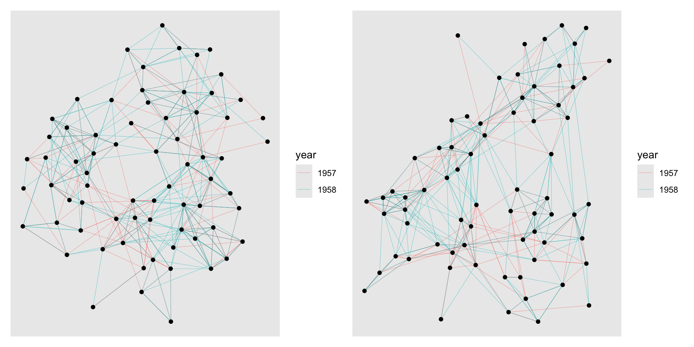
Figure 12: A comparison of two layout algorithms for the same network. One common layout algorithm uses force-directed placement. The edges here are interpreted as physical springs, and the node positions are iteratively updated according to the forces induced by the springs. Here is an interactive force-directed layout of the same network, generated using the
networkD3package, which illustrates how the spring force adjusts node positions.school_edges <- G_school |> activate(edges) |> as.data.frame() simpleNetwork(school_edges)Node-link diagrams can also be applied to tree data. We organize nodes by depth (distance from the root) by specifying that the layout be
tree. Settingcircular = TRUEwraps that same layout around a circle, which uses space more efficiently for deep trees.p_tree <- ggraph(G_flare, "tree") + geom_edge_link() + geom_node_label(aes(label = shortName), size = 3) p_circular <- ggraph(G_flare, "tree", circular = TRUE) + geom_edge_link() + geom_node_label(aes(label = shortName), size = 3) p_tree | p_circular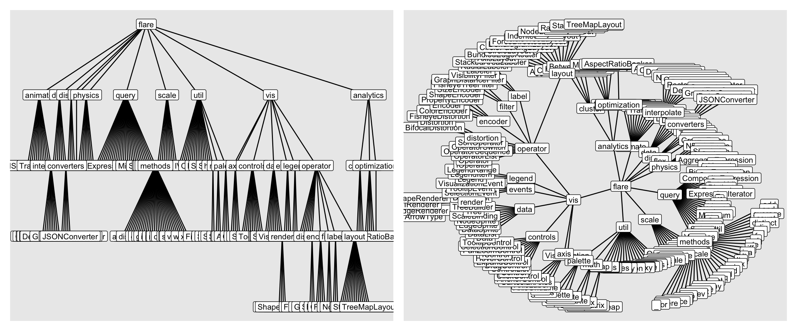
Figure 13: The flare directory structure, drawn with a linear and a circular tree layout. Scaling
The key drawback of node-link diagrams is that they do not scale well to networks with a large number of nodes or with a large number of edges per node. The nodes and edges begin to overlap too much, and the result looks like a “hairball.”

Figure 14: A node-link diagram that has stopped being informative. In this situation, it is possible to use additional structure in the data to salvage the node-link display. For example, in a large tree, a rectangular or BubbleTree layout can be used.

Figure 15: Example rectangular and BubbleTree layouts for very large trees, as shown in Visualization Analysis and Design. If a large network has a modular structure, then it is possible to first lay out the separate clusters far apart from one another, before running force directed placement.

Figure 16: A hierarchical force directed layout algorithm, as shown in Visualization Analysis and Design. When no such structure is available, it’s often useful to try filtering or aggregating nodes instead. Aggregation works by replacing the original nodes with metanodes representing entire clusters; filtering restricts attention to one node’s neighborhood, as in the ego networks below, where an overview is paired with detail views for a few selected nodes. This is especially powerful if the degree of filtering or aggregation can be adjusted interactively.
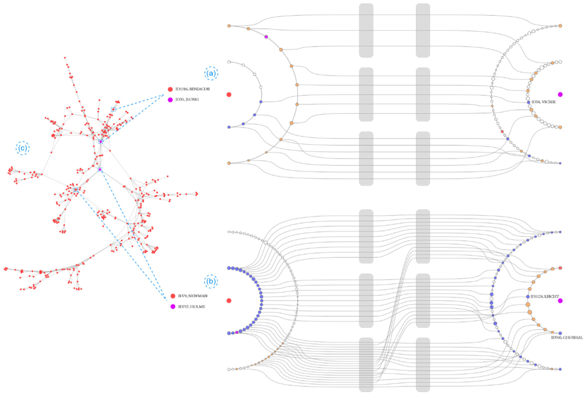
Figure 17: An overview node-link diagram (left) paired with ego network detail views for selected nodes (right). To summarize, node-link diagrams are very good for characterizing local structure, but struggle with large networks.
Exercise: Compare and contrast the visualization construction syntax of
ggraphwithggplot2andtmap. List at least one similarity and one difference to each.
Adjacency Matrices
The adjacency matrix of an undirected graph is the matrix with a 1 in entry \(ij\) if nodes \(i\) and \(j\) are linked by an edge and 0 otherwise. It has one row and one column for every node in the graph. Visually, these 1’s and 0’s can be encoded as black and white squares.
The example below shows the node-link and adjacency matrix plots associated with a small toy graph.
E <- matrix(c(1, 3, 2, 3, 3, 4, 4, 5, 5, 6), byrow = TRUE, ncol = 2 ) |> as_tbl_graph() |> mutate( id = row_number(), group = id < 4 ) p_toy_link <- ggraph(E, layout = "kk") + geom_edge_fan() + geom_node_label(aes(label = id)) p_toy_matrix <- ggraph(E, "matrix") + geom_edge_tile(mirror = TRUE, show.legend = TRUE) + geom_node_text(aes(label = id), x = -.5, nudge_y = 0.5) + geom_node_text(aes(label = id), y = 0.5, nudge_x = -0.5) + scale_y_reverse(expand = c(0, 0, 0, 1.5)) + # make sure the labels aren't hidden scale_x_discrete(expand = c(0, 1.5, 0, 0)) + coord_fixed() # make sure squares, not rectangles p_toy_link + p_toy_matrix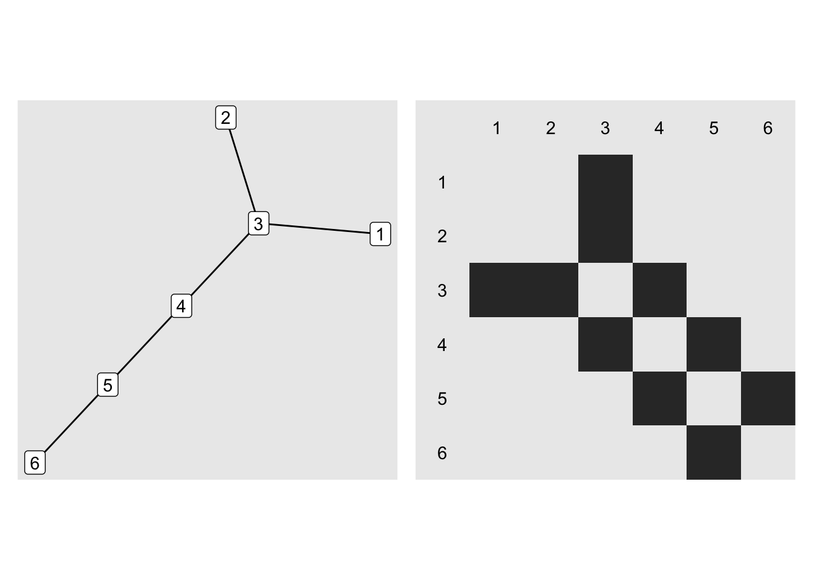
Figure 18: A six node graph, drawn as a node-link diagram and as an adjacency matrix. In a directed graph, the \(ij^{th}\) entry is set to 1 if node \(i\) leads directly to node \(j\). Unlike the undirected graph, it is not necessarily symmetric. The high school friendship network is a directed graph, because the students were surveyed about their closest friends, and this was not always symmetric.
ggraph(G_school, "matrix") + geom_edge_tile() + coord_fixed() + facet_wrap(~year)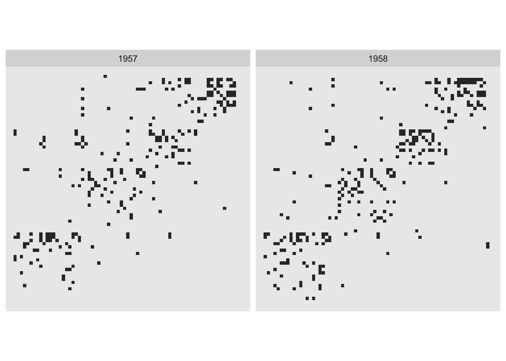
Figure 19: Adjacency matrices for the two years of the friendship survey. Node properties can be encoded along the rows and columns of the matrix. Edge properties can be encoded by the color or opacity of cells in the matrix. The example below simulates clustered data and draws the cluster label for each node along rows and columns.
G_islands <- sample_islands(4, 40, 0.4, 15) |> as_tbl_graph() |> mutate( group = rep(seq_len(4), each = 40), group = as.factor(group) ) ggraph(G_islands, "matrix") + geom_node_point(aes(col = group), x = -1) + geom_node_point(aes(col = group), y = 1) + geom_edge_tile(mirror = TRUE) + scale_y_reverse() + scale_color_brewer(palette = "Set2") + coord_fixed()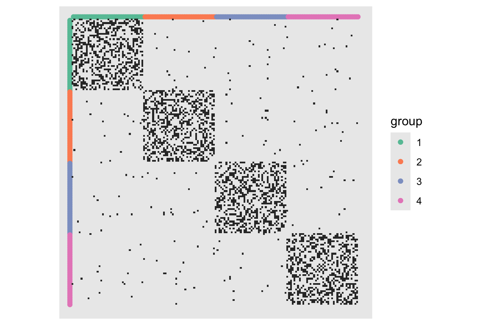
Figure 20: A simulated network with four communities. The example below takes a protein network and colors each edge according to the weight of experimental evidence behind that interaction.
proteins <- read_tsv("https://uwmadison.box.com/shared/static/t97v5315isog0wr3idwf5z067h4j9o7m.tsv") |> as_tbl_graph(from = node1, to = node2) ggraph(proteins, "matrix") + geom_edge_tile(aes(fill = combined_score), mirror = TRUE) + coord_fixed() + geom_node_text(aes(label = name), size = 3, x = -2.5, nudge_y = 0.5, hjust = 0) + geom_node_text(aes(label = name), size = 3, angle = 90, y = 0.5, nudge_x = -0.5, hjust = 0) + scale_y_reverse(expand = c(0, 0, 0, 2.7)) + # make sure the labels aren't hidden scale_x_discrete(expand = c(0, 3, 0, 0)) + scale_edge_fill_distiller() + labs(edge_fill = "Edge Confidence")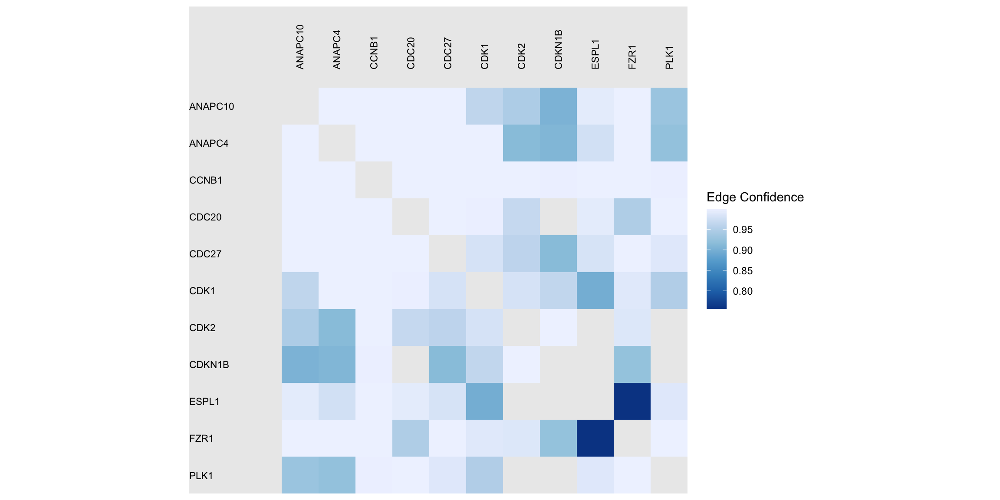
Figure 21: A protein interaction network, with edges shaded by the confidence of the interaction. The key advantage of visualization using adjacency matrices is that they can scale to large and dense networks. It’s possible to perceive structure even when the squares are quite small, and there is no risk of edges overlapping with one another.
Adjacency matrices can be as useful as node-link diagrams for the task of finding group structure. The example below shows how cliques (fully connected subsets), bicliques (sets of nodes that are fully connected between one another), and clusters (densely, but not completely, connected subsets) are clearly visible in both node-link and adjacency matrix visualizations.

Figure 22: Cliques, bicliques, and clusters are visually salient using either node-link or adjacency matrix representations of a matrix. The key disadvantage of adjacency matrix visualization is that it’s challenging to make sense of the local topology around a node. Finding the “friends of friends” of a node requires effort. For this reason, a number of hybrid methods which blend node-link and adjacency matrix representations have been proposed. Some approaches use the adjacency matrix to give a global view of a network, with dynamic queries on the matrix revealing the associated, local node-link diagrams.
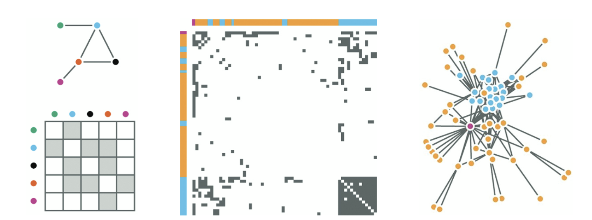
Figure 23: Node-link and adjacency matrix views of the same network, from Munzner’s Visualization Analysis and Design. These visualizations also tend to be less intuitive for audiences that haven’t viewed them before.
Ordering
Unlike a node-link diagram, an adjacency matrix requires us to associate each node with a row and a column, so the visualization depends on the choice of ordering. Different orderings of rows and columns can have a dramatic effect on the structure that’s visible1. For example, here is the same clustered network as above, but with a random reordering of rows and columns — the block structure has completely disappeared.
ggraph(G_islands, "matrix", sort.by = sample(vcount(G_islands))) + geom_node_point(aes(col = group), x = -1) + geom_node_point(aes(col = group), y = 1) + geom_edge_tile(mirror = TRUE) + scale_y_reverse() + scale_color_brewer(palette = "Set2") + coord_fixed()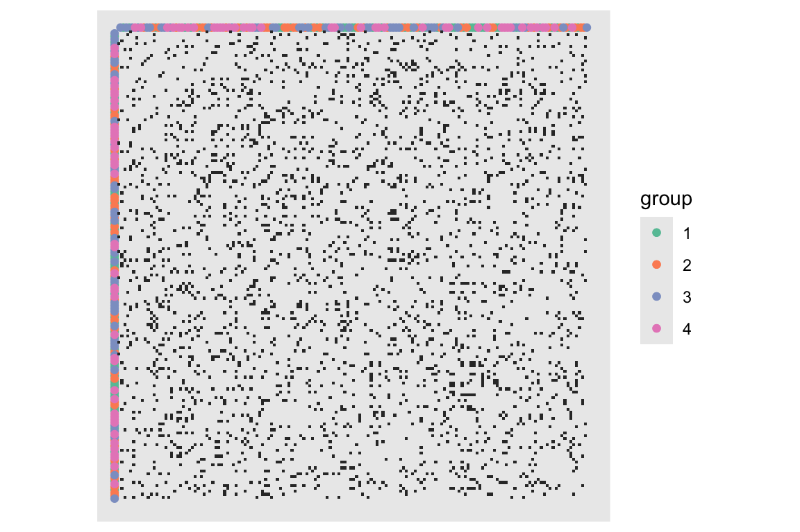
Figure 24: The same simulated network, with rows and columns in random order. Since ordering matters this much, it is worth choosing it deliberately rather than accepting whatever order the data happened to arrive in. This is also beautifully illustrated at this page (change the “order” dropdown menu), and in the screen recording below.
Exercise: What is the adjaceny matrix visualization for the simple network below?
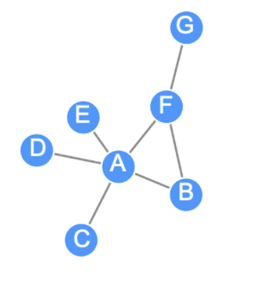
Figure 25
Enclosure
If nodes can be conceptually organized into a hierarchy, then it’s possible to use enclosure (i.e., the containment of some visual marks within others) to encode those relationships. Rather than drawing an edge from parent to child, we draw the child inside the parent.
p_nodelink <- ggraph(G_flare, "tree") + geom_edge_link() + geom_node_point(aes(size = size)) + scale_size(range = c(0.1, 5)) p_circlepack <- ggraph(G_flare, "circlepack", weight = size) + geom_node_circle(aes(fill = depth)) + scale_fill_distiller(direction = 1) + coord_fixed() p_nodelink + p_circlepack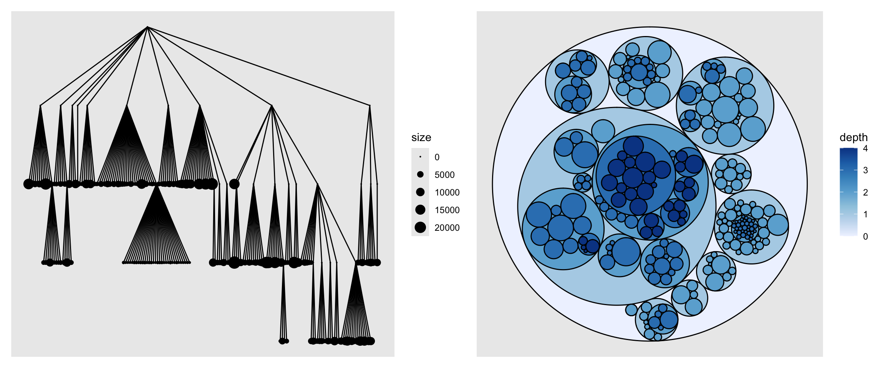
Figure 26: A tree and the equivalent representation using containment. The outer circle corresponds to the root node in the tree, and paths down the tree are associated with sequences of nested circles. The most important representation of this kind is the treemap. In the visualization below, each node is allocated an area, and all its children are drawn within that area (and so on, recursively, down to the leaves). The first two lines of code are the most important. The first says that we want to use a
treemaplayout, and that the size of each node should reflect thesizecolumn in the nodes component ofG_flare. The second line specifies visual encodings to add to each treemap tile (color will reflect how deep we are into the tree).ggraph(G_flare, "treemap", weight = size) + geom_node_tile(aes(fill = depth)) + scale_fill_distiller(direction = 1) + coord_fixed()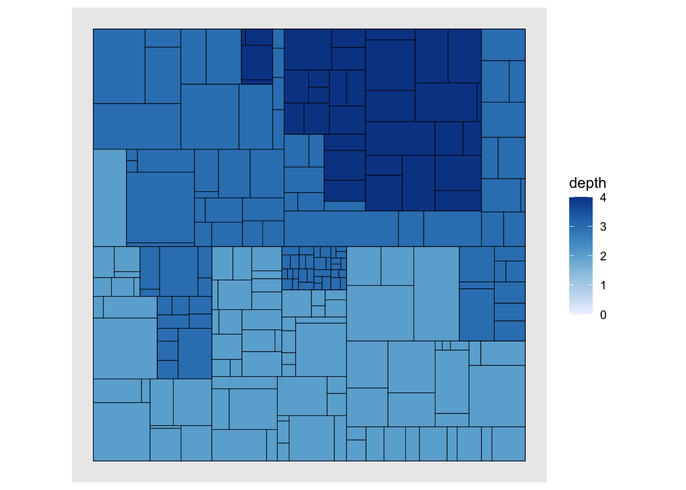
Figure 27: A treemap representation of the flare directory structure. This is a particularly useful visualization when it’s important to visualize a continuous attribute associated with each node. In the example above, the size of each tile was determined by the
sizevariable. A large node might correspond to a large part of a budget or a large directory in a filesystem. Here is an example visualization of Obama’s 2013 budget proposal.The main difficulty with using enclosure is that it becomes more difficult to trace the parent-child structure of the tree, and treemaps are not useful at all for topological comparisons, like the distance between two nodes. Connections between nodes immediately stand out in the node-link diagram, but they require deliberate inspection when using treemaps.
Hierarchy most obviously occurs in trees, but it can also be present in networks with clustering structure at several levels. In these situations, containment marks can directly represent those relationships. For example, in the network below, the red and yellow clusters are contained in a green supercluster. The combination of node-link diagram and containment sets makes this structure clear.

Figure 28: An example of how hierarchy across groups of nodes can be encoded within a network. An intermediate between the node-link and the treemap approach is to use an icicle plot. In this approach, the distance from the root is still encoded using position, like in a node-link diagram. A continuous value can be associated with each descendant node and encoded using the length of the associated rectangle. In ggraph, we can create this by specifying a
partitionlayout.ggraph(G_flare, "partition", weight = size) + geom_node_tile(aes(y = -y, fill = depth)) + scale_fill_distiller(direction = 1)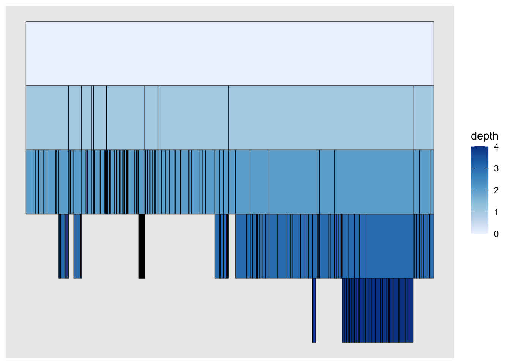
Figure 29: An icicle plot of the flare directory structure.
Edge Bundling
Return to the problem of edge crossings. When many edges travel through a few shared paths, it may be worthwhile to bundle them together, in the same way that cables running along the same route in a server rack are tied together. This preserves the key connectivity structure while minimizing the overlap that comes with more naive visualizations.
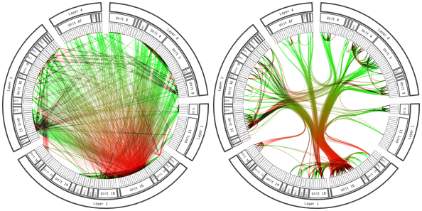
Figure 30: In edge bundling, similar paths are placed close to one another. An edge bundled view of a network is much easier to read. Bundled connections can be visualized using the
geom_conn_bundlegeometry in ggraph. Before using this layout, it is necessary to have a hierarchy over all the nodes, since shared ancestry among connected nodes is how the proximity of paths is determined. This is why edge bundling comes last in these notes — it needs both the node-link machinery and the hierarchies from the previous section. Here, the tree is the flare directory structure, and the bundled edges are theimportstatements between source files.from <- match(flare$imports$from, flare$vertices$name) to <- match(flare$imports$to, flare$vertices$name) ggraph(G_flare, layout = "dendrogram", circular = TRUE) + geom_conn_bundle(data = get_con(from = from, to = to), alpha = 0.1) + geom_node_label(aes(label = shortName), size = 2) + coord_fixed()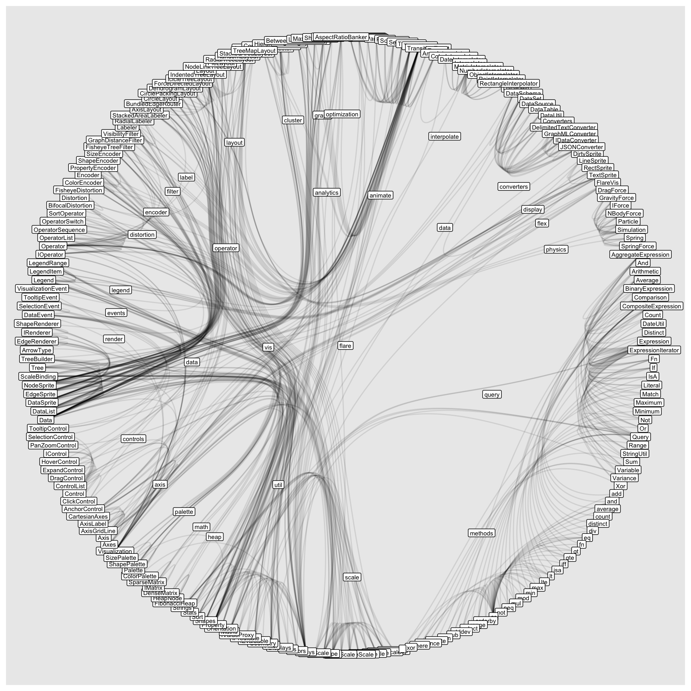
Figure 31: An example of hierarchical edge bundling in R.
References
Chun, Wendy Hui Kyong, and Alex Barnett. 2024. Discriminating Data. MIT Press.
Ehlers, Henry, Anaïs Villedieu, Renata G. Raidou, and Hsiang-Yun Wu. 2023. “Improving Readability of Static, Straight-Line Graph Drawings: A First Look at Edge Crossing Resolution Through Iterative Vertex Splitting.” Computers &Amp; Graphics 116 (November): 448–63. https://doi.org/10.1016/j.cag.2023.09.010.
Wang, Y X Rachel, Lexin Li, Jingyi Jessica Li, and Haiyan Huang. 2021. “Network Modeling in Biology: Statistical Methods for Gene and Brain Networks.” Stat. Sci. 36 (1): 89–108.
Footnotes
Though this additional degree of freedom can also allow richer comparisons.↩︎